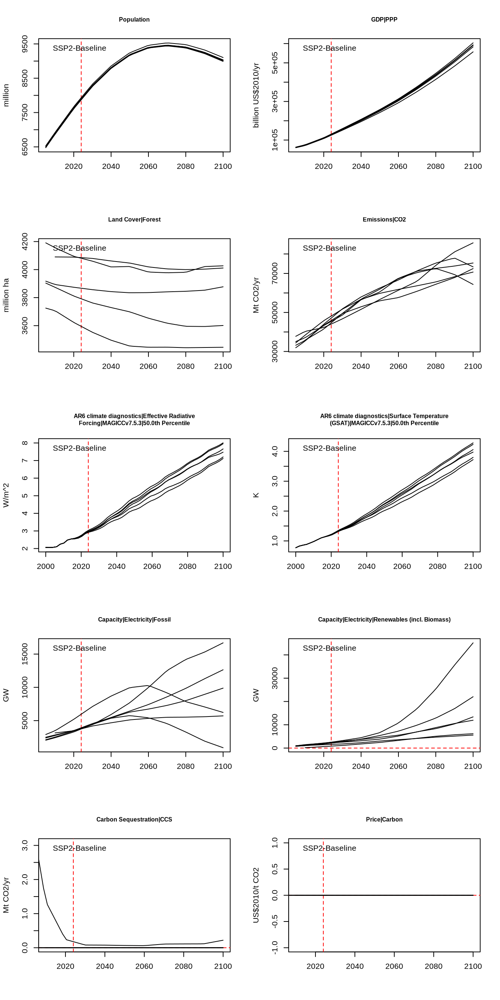
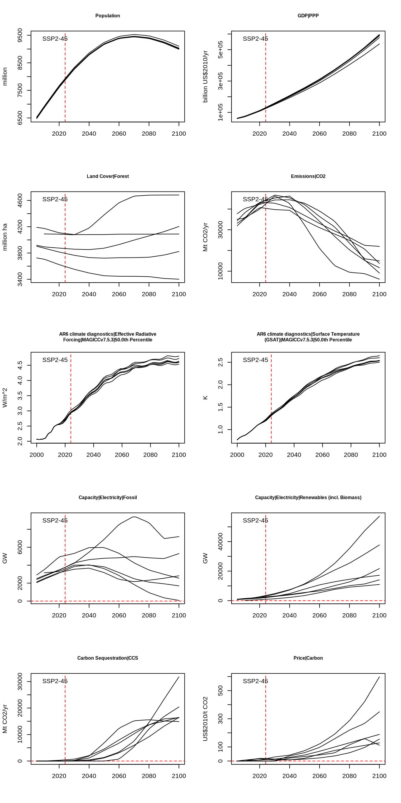
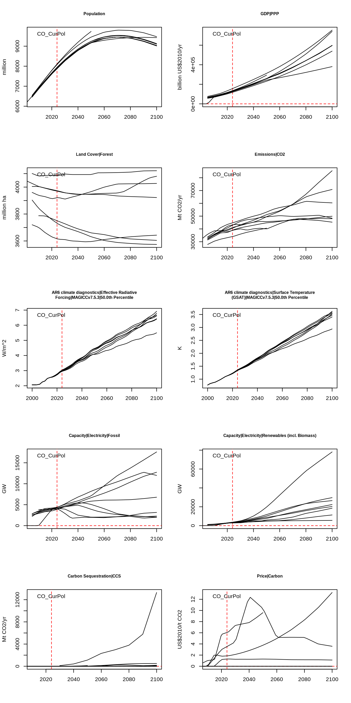
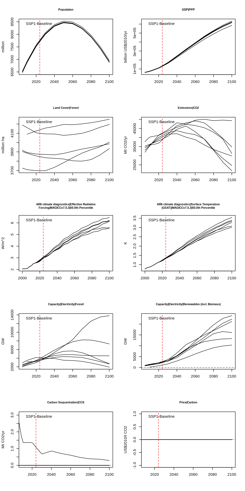
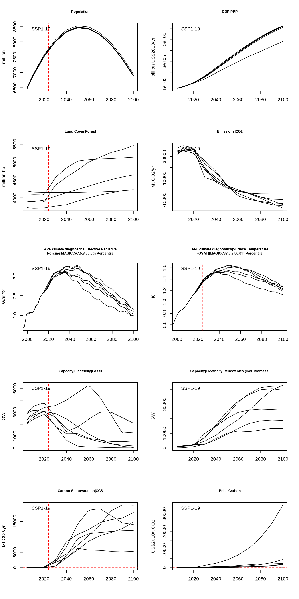

10 Week 10: Climate Futures and Solutions (I)
10.1 Scenario database
In this exercise you will explore a database with global impact assessment model outputs that were used in the most recent IPCC report (AR6, Working Group III). You will explore the distinction between baseline and mitigation scenarios and assess how well current trends and policies align with the goal of limiting global warming to 1.5 Degrees Celsius. You can access this data through the AR6 Scenario Explorer. Let’s open and explore the scenario database and see how many scenarios, models, and variables it contains.
rm(list = ls())
# Read in data
data.all <- read.csv("/global/teaching-project/sg51122000/shared_files/AR6_Scenarios_Database_World_v1.1.csv")
# Look at the column names
colnames(data.all)## [1] "Model" "Scenario" "Region" "Variable" "Unit" "X1995"
## [7] "X1996" "X1997" "X1998" "X1999" "X2000" "X2001"
## [13] "X2002" "X2003" "X2004" "X2005" "X2006" "X2007"
## [19] "X2008" "X2009" "X2010" "X2011" "X2012" "X2013"
## [25] "X2014" "X2015" "X2016" "X2017" "X2018" "X2019"
## [31] "X2020" "X2021" "X2022" "X2023" "X2024" "X2025"
## [37] "X2026" "X2027" "X2028" "X2029" "X2030" "X2031"
## [43] "X2032" "X2033" "X2034" "X2035" "X2036" "X2037"
## [49] "X2038" "X2039" "X2040" "X2041" "X2042" "X2043"
## [55] "X2044" "X2045" "X2046" "X2047" "X2048" "X2049"
## [61] "X2050" "X2051" "X2052" "X2053" "X2054" "X2055"
## [67] "X2056" "X2057" "X2058" "X2059" "X2060" "X2061"
## [73] "X2062" "X2063" "X2064" "X2065" "X2066" "X2067"
## [79] "X2068" "X2069" "X2070" "X2071" "X2072" "X2073"
## [85] "X2074" "X2075" "X2076" "X2077" "X2078" "X2079"
## [91] "X2080" "X2081" "X2082" "X2083" "X2084" "X2085"
## [97] "X2086" "X2087" "X2088" "X2089" "X2090" "X2091"
## [103] "X2092" "X2093" "X2094" "X2095" "X2096" "X2097"
## [109] "X2098" "X2099" "X2100"
# Number of available scenarios
n.scenarios <- length((unique(data.all$Scenario)))
# Number of available models
n.models <- length((unique(data.all$Model)))
# Number of available variables
n.variables <- length((unique(data.all$Variable)))
print(c("Number of Scnearios:", n.scenarios, "Number of models:", n.models, "Number of variables:", n.variables))## [1] "Number of Scnearios:" "939" "Number of models:"
## [4] "109" "Number of variables:" "1393"There are numerous scenarios, models, and variables to consider. However, not all models have been run for every scenario, and the variables often differ across models. Let’s identify which models are used in one of the fundamental scenarios: SSP2.
models <- data.all$Model
models <- subset(data.all, Scenario == "SSP2-Baseline")
models <- unique(models$Model)
print(models)## [1] "AIM/CGE 2.0" "GCAM 4.2" "IMAGE 3.0.1"
## [4] "MESSAGE-GLOBIOM 1.0" "REMIND-MAgPIE 1.5" "WITCH-GLOBIOM 3.1"To navigate the database effectively, we will concentrate on a few number of scenarios and variables. We’ll define a function to visualize all model results for a chosen subset of variables within a specific scenario. Here is this function:
plot.iams <- function(scenario, variables) {
# Subset data
data <- subset(data.all, Scenario == scenario)
# Figure layout
x <- 2
y <- ceiling(length(variables) / 2)
par(mfrow = c(y, x))
# Some more inputs for sub-setting the csv file
first <- 6 # First column with values (1995)
last <- ncol(data) # Last column with values (2100)
years <- 1995:2100
# Plot each variable
for (i in variables) {
subset.variable <- subset(data, Variable == i)
# Let's get the total range to set the y-axis
values.all <- subset.variable[first:last]
y.min <- min(values.all, na.rm = TRUE)
y.max <- max(values.all, na.rm = TRUE)
# Plot the first model
models <- unique(subset.variable$Model)
my.subset <- subset(subset.variable, Model == models[1])
unit <- my.subset$Unit
values <- my.subset[first:last]
values <- ts(as.numeric(values), start = 1995)
values <- approx(x = years, y = values) # Linear interpolation of missing values
# For very long variable names add a new line
title <- paste(strwrap(i, width = 50), collapse = "\n")
plot(
values,
type = "l",
xlab = NA,
ylab = unit,
main = title,
cex.main = 0.75,
ylim = c(y.min, y.max),
col = NA
)
abline(h = 0,
col = "red",
lty = 2)
abline(v = 2024,
col = "red",
lty = 2)
legend("topleft", scenario, bty = "n")
# Now add lines from all models
for (m in models) {
my.subset <- subset(subset.variable, Model == m)
values <- my.subset[first:last]
values <- ts(as.numeric(values), start = 1995)
values <- approx(x = years, y = values) # Linear interpolation of missing values
lines(values)
}
}
}We will now use our new function plot.iams() to explore the database.
10.2 Middle-of-the-road baseline sceanrio (SSP2)
Let’s focus for now on the Shared Socioeconomic Pathway (SSP) baseline scenarios. We have five baseline scenarios: SSP1-Baseline, SSP2-Baseline, SSP3-Baseline, SSP4-Baseline, SSP5-Baseline. Let’s plot results for the SSP2 (middle-of-the-road) scenario. When you add this chunk to your Markdownfile, you can control the size of the figures as follows: instead of starting your chunk with {r} you write: {r, fig.width=7, fig.height=14}. You can control the size of the figure by changing the figure width and height numbers.
scenario <- "SSP2-Baseline"
variables <- c(
"Population",
"GDP|PPP",
"Land Cover|Forest",
"Emissions|CO2",
"AR6 climate diagnostics|Effective Radiative Forcing|MAGICCv7.5.3|50.0th Percentile",
"AR6 climate diagnostics|Surface Temperature (GSAT)|MAGICCv7.5.3|50.0th Percentile",
"Capacity|Electricity|Fossil",
"Capacity|Electricity|Renewables (incl. Biomass)",
"Carbon Sequestration|CCS",
"Price|Carbon"
)
plot.iams(scenario = scenario, variables)
Does the scenario contain a climate change mitigation policy that puts a price carbon emissions?
What is the radiative forcing and temperature change in the year 2100?
Next, let’s compare this result with the scenario SSP2-45
10.3 Middle-of-the-road sceanrio (SSP2-45)

- Describe the differences between SSP2 and SSP2-45 for all ten variables
- Which of the two scenarios has climate change mitigation policies?
- Are the emission reductions in SSP2-45 large enough to comply with the 2015 Paris Agreement?
- The Global Carbon Budget shows that the global annual CO2 emissions were approximately 42 Gt CO2 in 2024. Note that 1 Giga equals 1000 Mega, so 42 Gt CO2 per year equal 42,000 Mt CO2 per year. Are these emissions still consistent with SSP2-45 in 2024 (marked by the red vertical dashed line)?
10.4 Current Policies and trends scenario (CO_CurPol)
SSP2 is often described as a ‘middle-of-the-road’ scenario, representing a pathway where social, economic, and technological trends continue without significant deviations from historical patterns. Let’s assess how closely current conditions align with SSP2-4.5. To do this, we’ll examine the CO_CurPol scenario, which reflects current trends and policies. We’ll plot the output from CO_CurPol and compare it to SSP2-4.5

- What is the raditive forcing by the year 2100?
- What is the approximate range of temperature change by the year 2100 in the current policies and trend scenario?
- Is the CO_CurPol scenario well aligned with SSP2-45?
- Are we on track meeting the 2015 Paris Agreement Goal?
10.5 Sustainable Development Scenario (SSP1)
Next, we will turn our attention to SSP1, the sustainability scenario. In SSP1, the world gradually transitions toward a more sustainable pathway, prioritizing inclusive development that respects environmental boundaries. Global commons management improves, investments in education and healthcare accelerate demographic transitions, and the focus on economic growth broadens to emphasize overall human well-being. With a heightened commitment to development goals, inequalities are reduced both within and between countries. Consumption patterns shift toward low material growth, with reduced resource and energy intensity

- Will the SSP1-Baseline scenario be enough to implement the 2015 Paris Agreement?
10.6 Mitigation scenarios
Next, we will examine a climate change mitigation scenario that outlines the changes needed to meet the targets of the 2015 Paris Agreement. One example is SSP1-19, a scenario based on the SSP1 storyline, which incorporates emissions reductions to limit radiative forcing to no more than 1.9 W m-2 by the year 2100.

- Describe how emissions need to change in order to stay blow the 1.5 Degree global warming target.
- You can see that CO2 emissions become negative after the year we reach net-zero. How is this possible?
- Recall that global annual CO2 emissions are approximately 42 Gt CO2 in 2024. Are we well-alligend with SSP1-19?
10.7 Your scenario of interest
Finally, explore a scenario that interests you. Describe what the scenario represents and plot some of the variables that characterize the scenario. You can list all available scenarios like this: unique(data.all$Scenario), and you can find more about each scenario here.